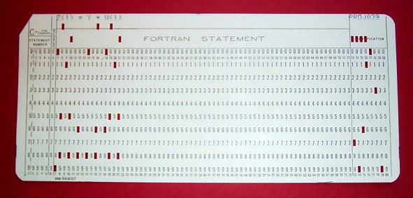

Declaración de código Fortran en una tarjeta perforada
Para que la computadora entienda las instrucciones que nosotros enviamos se debe usar un lenguaje especifico
conocido como código maquina, este tipo de lenguaje es muy complicado de manejar ya que solo consiste en extensas
cadenas numéricas de 0 y 1.
Para facilitar el trabajo de creación de un programa fue que se creo el lenguaje ensamblador que abstrae ordenes
a letras y palabras del lenguaje inglés, como por ejemplo la letra A la cual permite adicionar o sumar
dos valores, estas pequeñas palabras y letras abrieron una nueva era para la computacion con codigo mas
entendible y manejable.
El afán de conocimiento, como la sed de riquezas, aumenta siempre con su adquisición. (Laurence Sterne)
A finales de 1953, John Backus propuso en IBM el desarrollo de una alternativa mas practica que el uso de
ensamblador, de esta manera empezó el desarrollo del lenguaje Fortran.
Fortran aparece en 1956, mientras que su primer compilador aparece en 1957, la gente de esa epoca era reacia
ante un lenguaje de alto nivel cuyo desempeño se compare con un código hecho en ensamblador.
En 1960, nació COBOL, un lenguaje cuyo uso se extiende hasta la actualidad, ya que es eficaz
en el manejo numérico y ampliamente usado en los bancos.
A medida que la complejidad de las tareas aumentaban nacieron nuevos lenguajes para disponer de un método
mas eficiente de crear sistemas informatico, por ejemplo BASIC que en una sentencia se podía
hacer lo mismo que con varias instrucciones de ensamblador.
Una emulacion de la iconica canción de Mario Bros en Ensamblador 8086